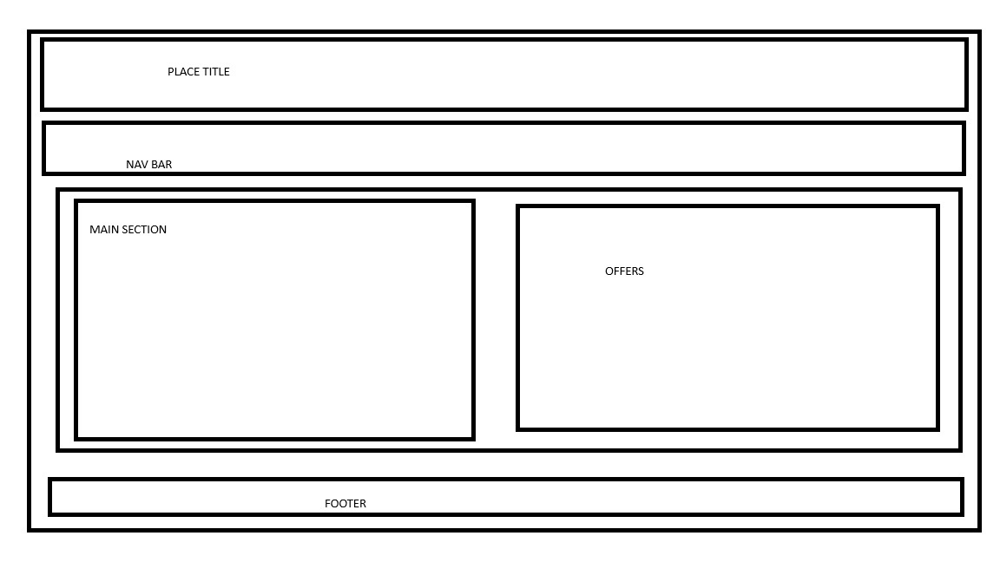

Site Name (1 pt)
Site Name
Name: Gaucho Restaurant ...
Reason: The restaurant specializes in traditional dishes from Argentina’s Patagonia, offering the world’s best meats and the authentic Asado Argentino. The name “Gaucho” reflects Argentina’s cultural heritage.
Site Purpose
The main purpose of the site is to make the restaurant visible worldwide and accessible to tourists who want to experience Argentina’s famous meats and traditional cuts. The site will provide menus, prices, special offers, and reservation options.
Scenarios
A tourist visiting Patagonia wants to see the daily specials before choosing where to eat.
A visitor wants to compare prices of main dishes, desserts, and drinks (wine, carbonated drinks, juices) before reserving a table.
Color Schema
Primary Color: #8B0000 (Dark Red) – Represents fire, passion, and grilled meat. Used in the header, navigation bar, and call-to-action buttons.
Secondary Color: #F5F5DC (Beige) – Neutral background representing warmth and tradition. Used in the background, content areas, and sections for readability.
Accent Color: #FFD700 (Gold) – Represents quality and premium dining. Used for titles, highlights, and icons.
Color Schema Use in Document
Header and navigation bar: Dark Red (#8B0000)
Background: Beige (#F5F5DC)
Buttons and highlights: Gold (#FFD700)
Body text: Black (#000000) for readability
Typography Named and Used
Font Family: Merriweather (serif) → Used for headings to give a traditional and elegant feel.
Font Family: Open Sans (sans-serif) → Used for body text and navigation links, ensuring readability across devices.
Wireframe
Mobile Wireframe (Single column)
Wide View Wireframe (Desktop)
